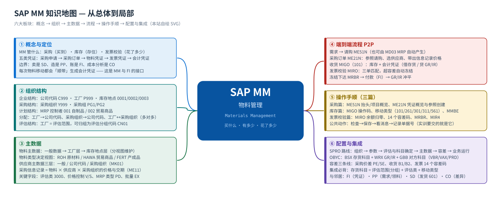
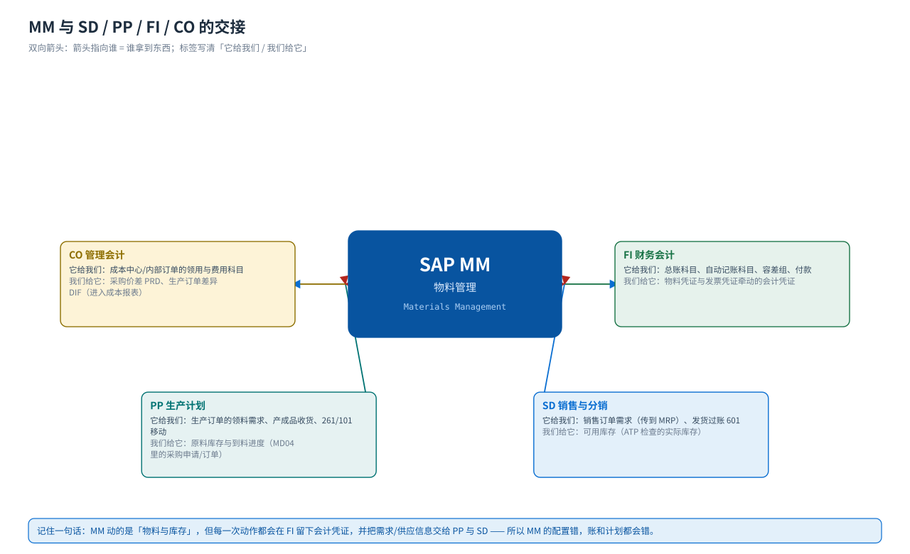

首页 · 课程地图与学习路线
MM 管什么 · 怎么学 · 学完能做什么
MM（物料管理）管的是「企业的物料从哪来、存在哪、花多少钱」：采购申请与采购订单、收货与库存移动、发票校验与自动记账。本站按「概念 → 组织 → 主数据 → 端到端流程 → 分步操作手顺 → SPRO 配置 → 实训」讲，每个环节都配教材原书的真实 SAP GUI 画面。
14页课程页数
42个任务教材 MM 全部任务，逐个走查
168步手顺步骤（含截图）
295处实机截图引用
学习路线：从总体到细节
① 概念MM 管什么、和谁交接→② 组织公司代码 / 工厂 / 采购组织→③ 主数据物料 / 供应商 / 信息记录→④ 流程P2P 端到端 + 单据流→⑤ 操作手顺采购 · 库存 · 发票校验→⑥ 配置SPRO 42 个任务→⑦ 实训五个动手任务→⑧ 自测30 题 · 合格 75%
建议的学法先看 概念 建立「谁产生什么凭证」的整体印象，再按 组织 → 主数据 把数据坐标立起来，然后走一遍 端到端流程；最后拿 采购、库存、发票校验 三篇当操作手册，在系统里照着做；配置篇 是后台的完整索引。
模块地图
{kind=link}

六大板块
① 概念与定位MM 的三大职能、五类凭证、与 FI/PP/SD/CO 的分界；12 个常见误解
② 组织结构公司代码 / 工厂 / 库存地点、采购组织 / 采购组、MRP 控制者与它们的分配
③ 主数据物料主数据（20+ 视图按组织层拆）、供应商（三层）、采购信息记录
④ 端到端流程请购 → 采购订单 → 收货 → 发票校验 → 付款，以及每步的凭证与记账
⑤ 操作手顺三篇局部详解：采购、库存（移动类型）、发票校验（差异与冻结）
⑥ 配置与实训SPRO 42 个任务（IMG 路径 + 手顺 + 截图）、五个实训、30 题自测
集成关系：MM 不是孤岛
{kind=link}

| 邻居模块 | 给它（MM 提供） | 它给 MM | 典型凭证/接口 |
|---|---|---|---|
| FI 财务会计 | 物料凭证牵动的会计凭证（存货、GR/IR、成本、差异） | 总账科目主数据、自动记账科目、容差组、付款 | BKPF/BSEG；科目确定 BSX/WRX/GBB |
| PP 生产计划 | 原料库存、采购到料进度（MD04 里的采购申请/订单） | 生产订单的领料需求、收货（产成品入库）、261/101 移动 | 预留、采购申请（MRP 转换） |
| SD 销售与分销 | 可用库存（ATP）、发货时的库存减少（601） | 销售订单需求（需求传递到 MRP） | VL02N 发货过账 → 物料凭证 + 会计凭证 |
| CO 管理会计 | 采购价差、生产订单差异（进入成本报表） | 成本中心/订单的领用科目与成本要素 | PRD/DIF 差异科目、成本要素 |
教材场景（颐宁公司）
本站所有示例值都来自教材《S4.docx》MM 模块的画面，不是标准值 —— 换到自己的系统请按页面里写的「怎么确认」核对。
| 对象 | 教材值 | 说明 |
|---|---|---|
| 公司代码 | C999 | 颐宁公司（教材示例） |
| 工厂 | P999 | 颐宁机械工厂 |
| 库存地点 | 0001 仓库 / 0002 生产 / 0003 运输 | 教材任务 02 建立；MIGO 画面里显示为 001 |
| 采购组织 | Y999 | 颐宁采购组织 |
| 采购组 | PG1 原材料和运营供应 / PG2 贸易商品 | 任务 04 |
| MRP 控制者 | 001 自制品 / 002 贸易商品 | 任务 05 |
| 评估分组代码 | CN01 | 把工厂 P999 归组，统一自动记账规则 |
| 物料 | R999-100 罩壳 · R999-200 飞轮 · R999-300 管轴 · R999-400 支撑架 · R999-500 金属片 · T999-100 贸易商品 | 原材料（ROH）/ 贸易商品（HAWA） |
| 供应商 | 10000000 红星轴承厂 | 任务 26 维护采购数据 |
| 信息记录 | 管轴 50 件 / 净价 1700 元 / 3 天交货 | ME11，任务 27 |
代表性画面（先建立整体印象）
下面六张是教材原书 MM 主线上的关键画面，按「主数据 → 请购 → 订单 → 收货 → 发票校验 → 库存」排列；后面每一页都会逐屏展开（每张图都带「画面 N」编号与原图文件名）。


怎么用这个站
- 带「画面 N」编号的图 = 教材原书的 SAP GUI 实机截图（中文界面），图注里保留原图文件名，可回 Word 原稿逐张核对。
- 图注写「本站自绘 SVG」的 = 我们画的流程图/结构图/思维导图，用于讲清结构与顺序；图上的数值是课程场景值。
- 每页底部都有「其他模块」的入口；顶部横条可以在 MM / PP / FI / CO 与总览之间跳转。
- 配置篇的每个任务都给出「IMG 路径 + 手顺步骤 + 教材画面」，路径可以点击左侧小图标复制。